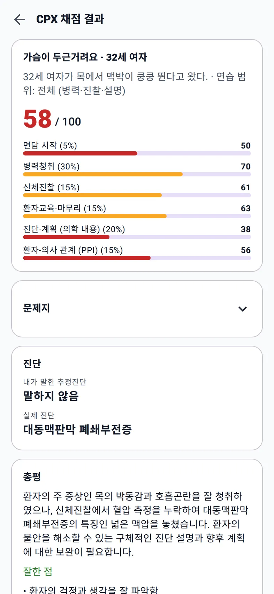
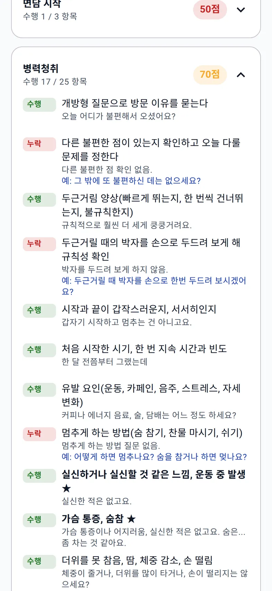

결과표를 받았다면,
다음에 할 질문 하나 고르기
총점만 보면 무엇을 다시 연습할지 정하기 어렵다. 누락 항목, 내가 실제로 한 말, 환자의 답변을 함께 보면 다음 시도에서 바꿀 부분이 보인다. 이 글은 기존 시연의 58점 결과표를 바탕으로 복습하는 순서를 제안한다.
58점 결과표에서 실제로 빠졌던 것
기존 한 스테이션 시연은 두근거림을 호소한 환자의 연습 결과다. 면담을 끝낸 뒤 결과표에 58점이 표시되었다. 아래 화면과 사례는 그 시연을 재사용하며 새로운 실행 결과나 점수 개선 사례가 아니다.


이 시연에서는 ‘그 밖에 불편한 점을 확인하고 오늘 다룰 문제를 정하기’가 누락이었다. 중간 요약은 부분 수행이었다. 환자가 말하지 않은 “커피 마신 날 더 심하다”는 내용을 요약에 넣었고, 환자가 바로잡았기 때문이다.
상태 표시와 대화 근거를 함께 읽기
| 확인한 문제 | 다음 면담에서 해 볼 행동 |
|---|---|
| 다른 불편한 점 확인이 누락 | 면담 초기에 “그 밖에 불편한 점도 있으세요?”라고 묻고 환자의 답변을 듣는다. |
| 두근거림의 규칙성 확인이 누락 | 환자의 설명이 모호하면 어떻게 뛰는 느낌인지 더 듣거나 박자를 표현해 달라고 요청한다. |
| 환자가 하지 않은 말을 중간 요약에 넣음 | 대화에서 실제로 들은 사실만 요약하고 “제가 이해한 게 맞을까요?”라고 확인한다. |
‘누락’ 표시만으로 곧바로 내 실수라고 결론 내리지는 않는다. 실제 대화에서 했던 말이 있는지 확인한다. AI가 놓쳤거나 다르게 해석했을 수도 있으며, 앱에서는 항목 상태를 직접 고칠 수 있다.
다음 시도에 가져갈 메모 만들기
- 항목 하나: 오늘 다시 해 볼 질문이나 설명을 한 개 고른다.
- 확인한 근거: 실제 대화에서 빠졌는지, 물었지만 답을 듣지 않았는지 확인한다.
- 바꿀 문장: 환자에게 말할 수 있는 짧은 문장으로 적는다.
- 넣을 시점: 인사 뒤, 증상 경과를 들은 뒤, 마무리처럼 면담 속 위치를 정한다.
예시 복습 메모
항목: 다른 불편한 점 확인
다음 문장: “오늘 말씀하신 것 말고 또 불편한 점이 있으세요?”
넣을 시점: 첫 증상 이야기를 들은 뒤, 자세한 문진을 시작하기 전
다음 확인: 질문을 했는지와 환자 답변을 듣고 면담에 반영했는지를 함께 보기
위 메모는 페이지에서 보여 주는 작성 예시다. 별도 저장 기능이나 자동 생성된 연습 기록을 뜻하지 않는다. 앱 기록을 읽으면서 본인에게 편한 곳에 적으면 된다.
같은 환자에서 확인하고 다른 환자로 옮기기
같은 환자를 다시 선택하면 새 질문을 어디에 넣을지 연습하기 쉽다. 그다음 같은 증상의 다른 환자로 바꾸고, 환자 반응이 달라져도 질문의 목적을 유지할 수 있는지 본다.
점수 변화만 비교하기보다 누락 질문을 실제로 했는지, 답변을 듣고 이어 갔는지 확인한다. AI 점수는 연습용 추정치이며 실제 국시 합격 가능성의 검증된 예측값이 아니다. 비언어적 태도와 실제 진찰 동작은 동료 역할극이나 학교 실습에서도 점검한다.
자주 묻는 질문
- AI가 누락이라고 하면 무조건 틀린 건가요?
- 아닙니다. AI 채점에는 오류가 있을 수 있습니다. 대화 기록과 항목의 근거를 함께 확인하고, 잘못 평가되었다면 앱에서 항목 상태를 직접 수정할 수 있습니다.
- 58점은 실제 시험 점수인가요?
- 아닙니다. 기존 앱 시연에서 나온 연습용 점수입니다. 국시원의 공식 배점이나 실제 시험 성적이 아니며 합격 가능성을 검증한 예측값도 아닙니다.
- 복습할 때 모든 누락 항목을 한 번에 고쳐야 하나요?
- 한 번에 한 질문이나 설명을 골라 다음 면담에서 실제로 사용해 보는 방법을 제안합니다. 같은 환자로 적용한 뒤 다른 증례에서 다시 확인할 수 있습니다.
- 전체 케이스가 무료인가요?
- 네. 앱 이용료와 케이스 추가 결제가 없으며 전체 케이스에 유료 잠금이 없습니다. AI 대화·채점에는 본인의 Gemini API 키가 필요합니다. Google 무료 등급의 사용 한도가 적용되며, 유료 등급을 직접 선택하면 별도 API 요금이 발생할 수 있습니다.
한국어 AI 모의환자와 연습하기
웹 앱에서 ‘한국 의사국시 CPX’를 선택한다. 앱 이용료와 케이스 추가 결제가 없다. AI SP와 대화·채점을 이용하려면 본인의 Gemini 키를 연결하고, 키 없이도 공부 노트와 체험 환자를 먼저 살펴볼 수 있다.
Google 무료 등급의 사용 한도와 데이터 이용 조건이 적용된다. 유료 등급을 직접 선택하면 별도 API 요금이 발생할 수 있다. 실제 환자 정보와 개인정보는 입력하지 않는다.
자료와 확인 범위
58점과 누락·부분 수행 사례, 화면은 기존 스테이션 시연의 체크리스트에서 가져왔다. 복습 메모와 재연습 순서는 이 글의 제안이며 별도의 실험이나 학습 성과를 주장하지 않는다. 앱의 채점은 자체 연습 기준을 사용한다.
기능과 증례 범위는 2026년 10월 21일 기준이다. AI의 답변·채점에는 오류가 있을 수 있다. 비용 조건은 Google Gemini API 요금 안내와 사용 한도 안내에서 확인할 수 있다.